Inspirados nos aros olímpicos, desenvolvemos uma forma dinâmica e viva, que assume curvas que remetem aos esportes e à cidade do rio. Um dos objetivos da identidade para os jogos olímpicos era ser mais natural, mais próximo do espectador, diferente do on-air oficial do canal no momento, que tinha um apelo de grandiosidade. Aqui, trabalhamos com as imagens da cidade e com as imagens dos atletas, os elementos mais importantes do produto.
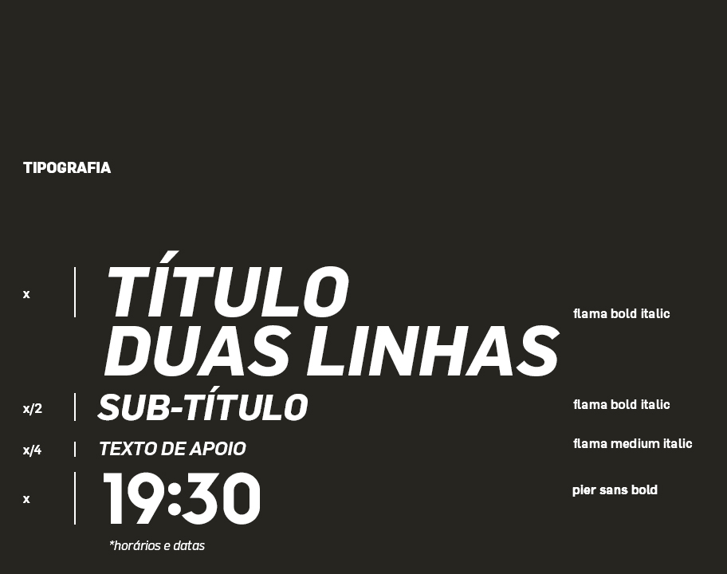
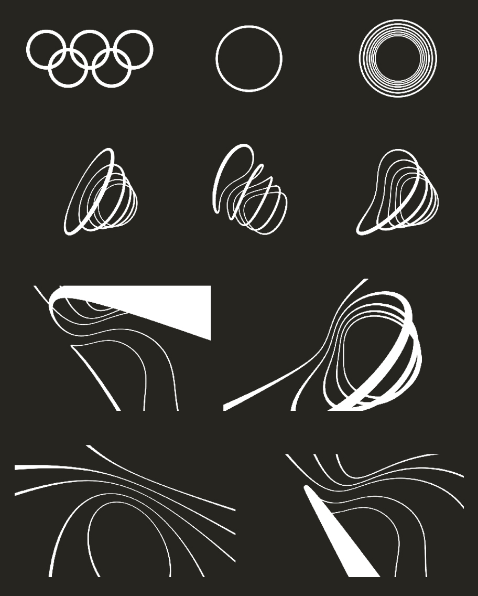
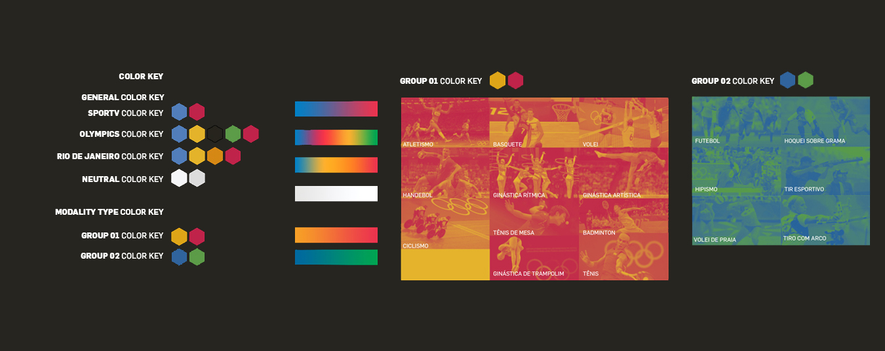
Para as chamadas de programação (promos), uma estrutura modular baseada na duração e objetivo de cada peça, além de um pacote gráfico restrito e específico, o que facilita o trabalho dos editores e garante a manutenção da identidade.
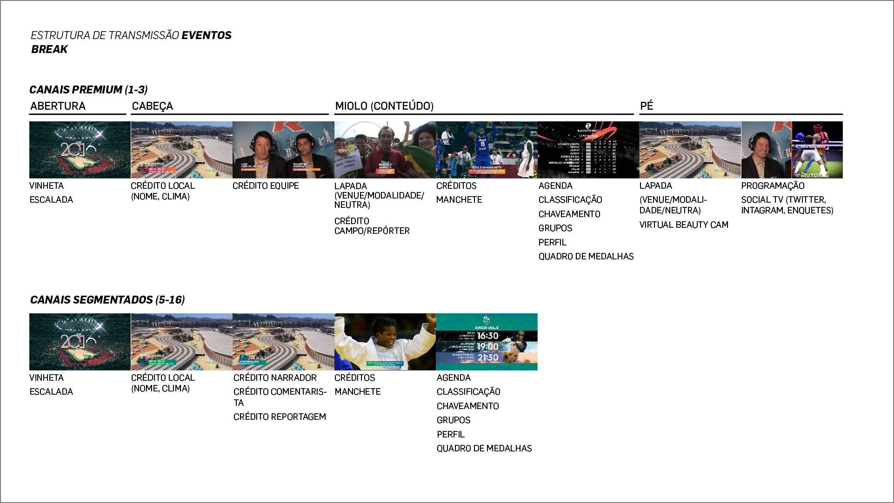
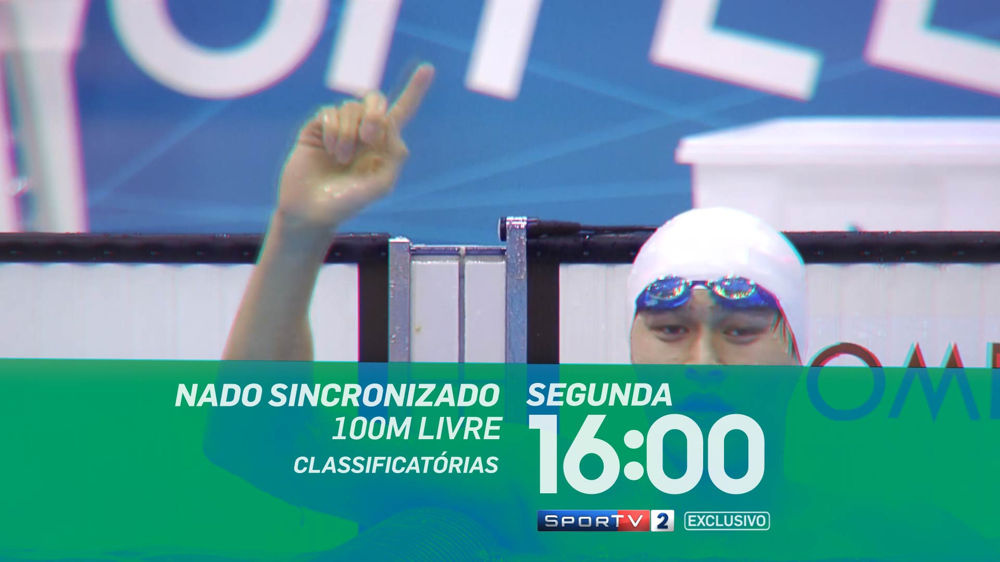
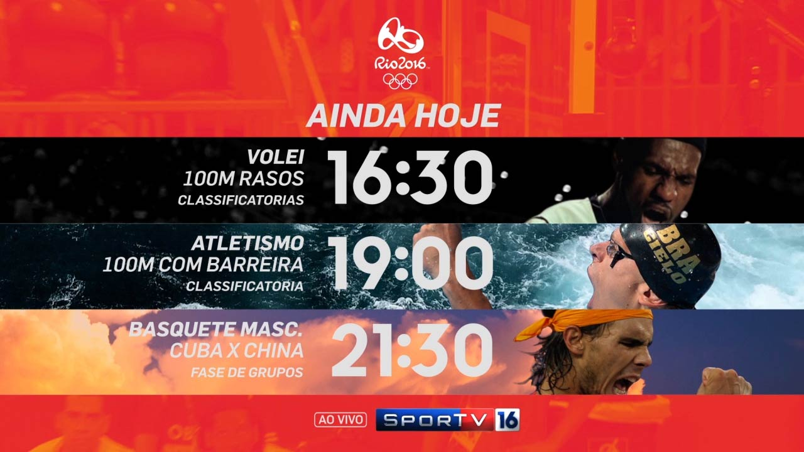
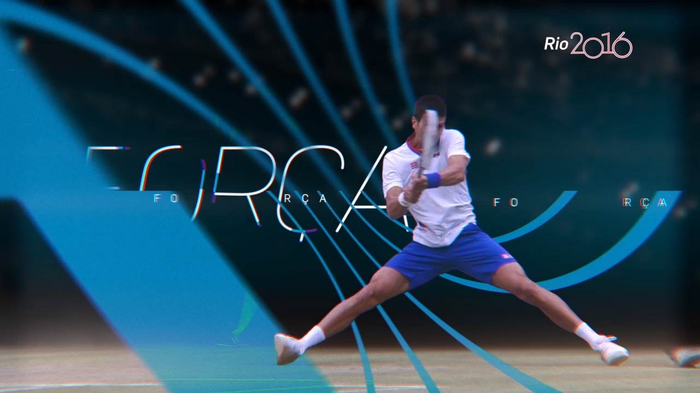
O pacote de gráficos ao vivo foi projetado para atender tanto
às demandas de transmissão quanto aos programas, que também tiveram no estúdio o Sportv
o recurso de realidade virtual.
Com 16 canais totalmente dedicados aos jogos olímpicos,
o pacote de gráficos ao vivo precisava ser versátil tanto visualmente como operacionalmente.
Diferentes estruturas de controle foram montadas para o funcionamento dos canais e para
atender aos programas.
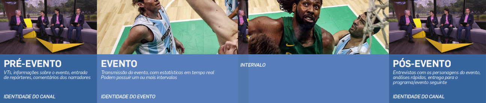
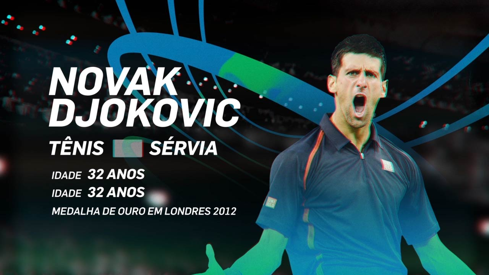
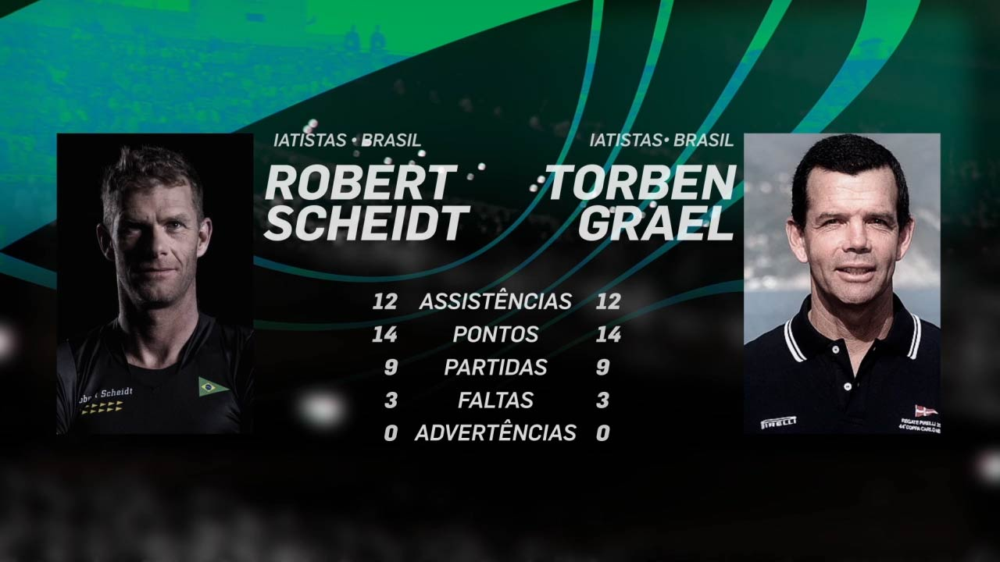
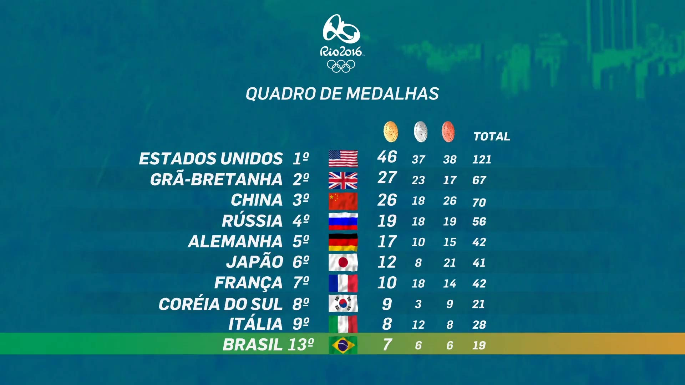
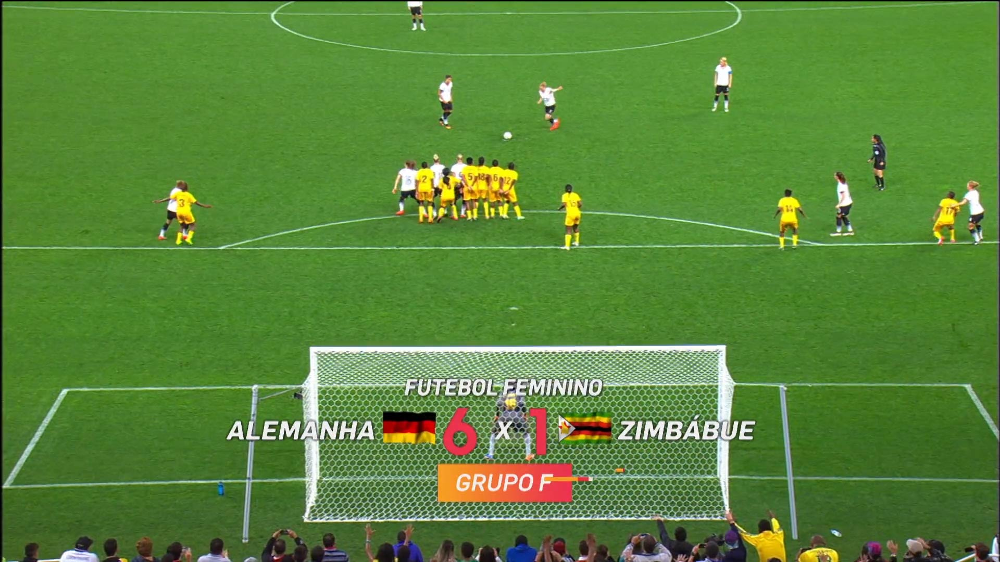
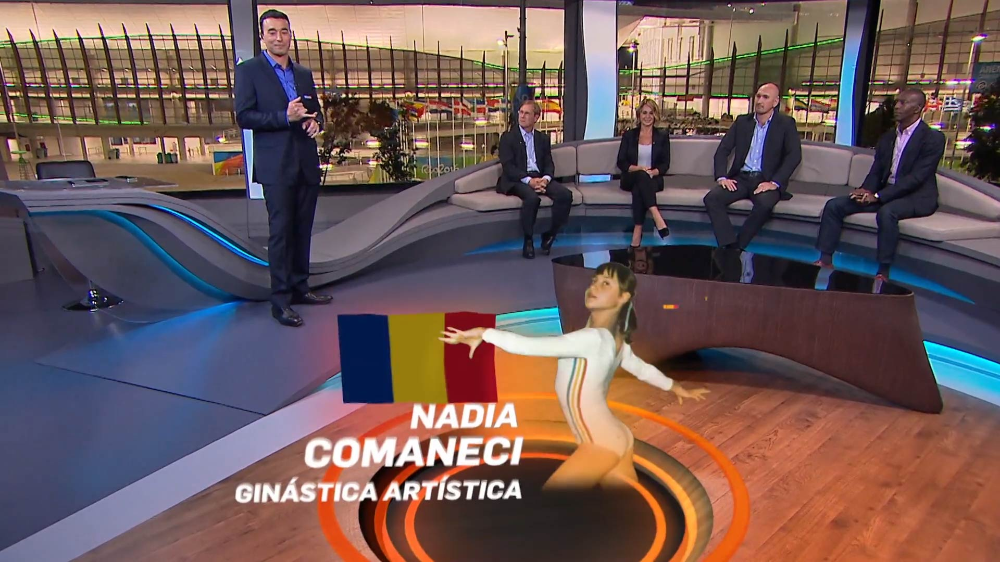
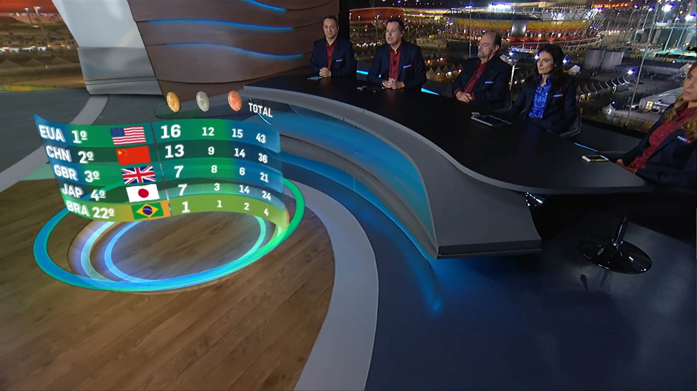
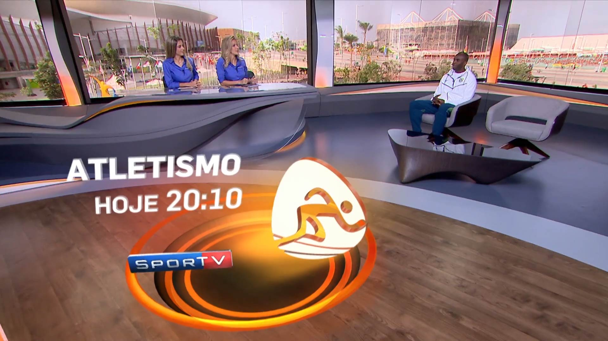
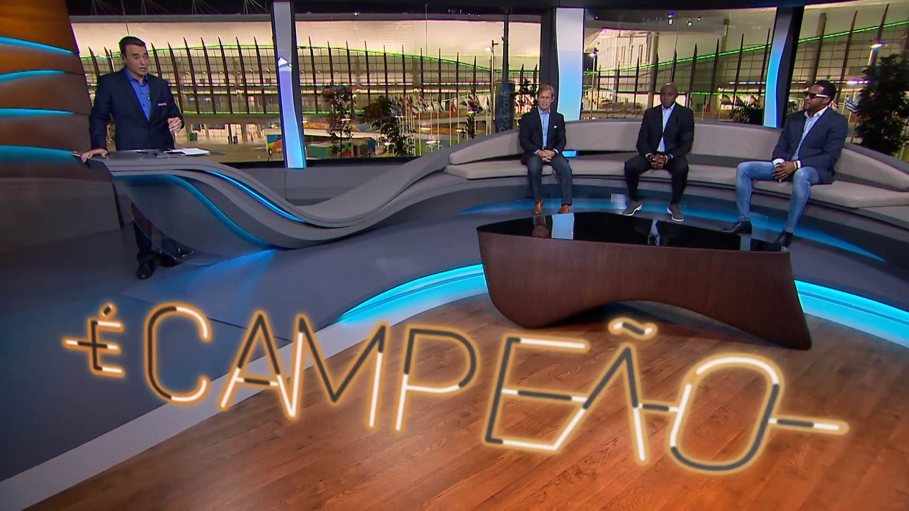
Globosat Comunicação & Branding
2016
Diretor Criativo Ricardo Moyano
Coordenador Criativo Stânio Soares
Coordenador Digital Renan Barros
Sound Branding Conrado Kempers
Diretor de Arte Julio Marcello
Designers Adolfo Fischer, Julio Marcello, Vinícius Franco
Designers Assistentes Anderson Gomes, Bruno Marques, Gerson do Amaral, Jonathan Silva, Julia Ayres, Rodrigo Konder e Rodrigo Pimenta
Editores Dario Maciel, Leonardo Telles e Renan Salgado